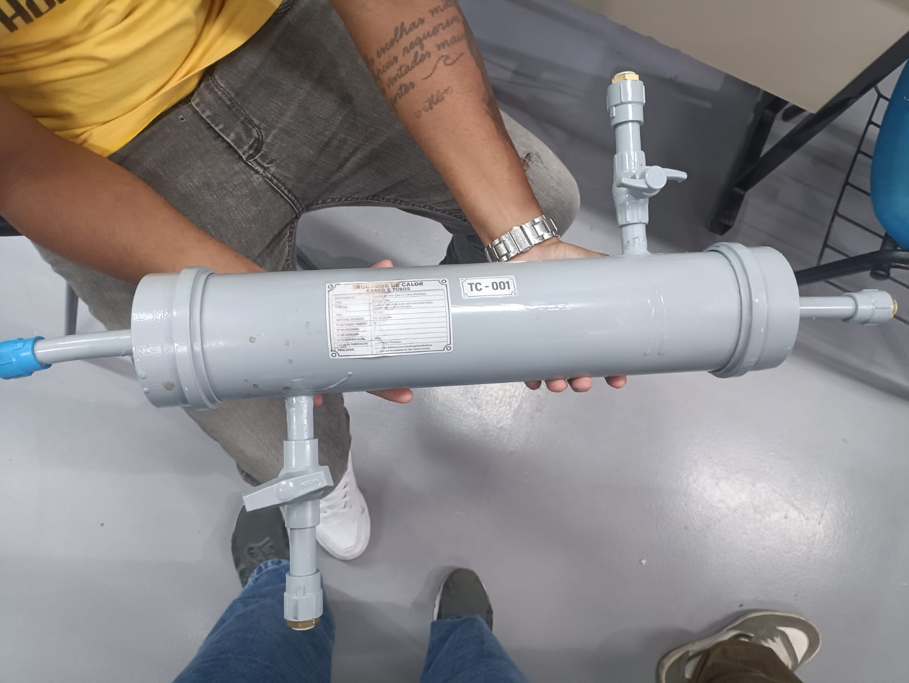
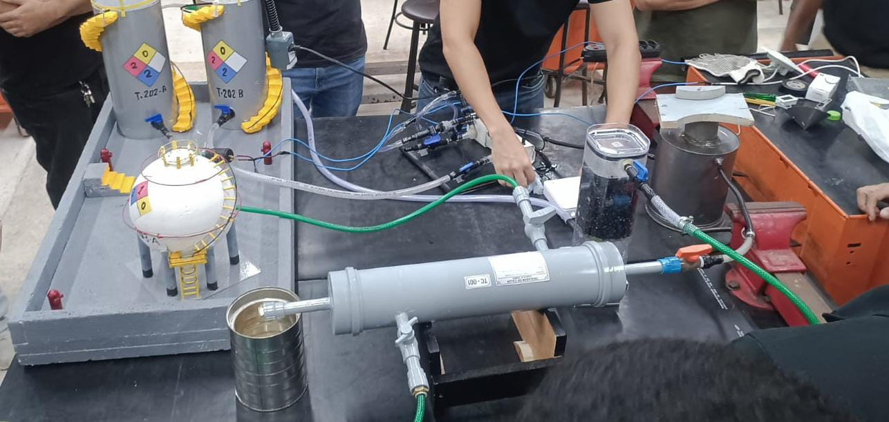
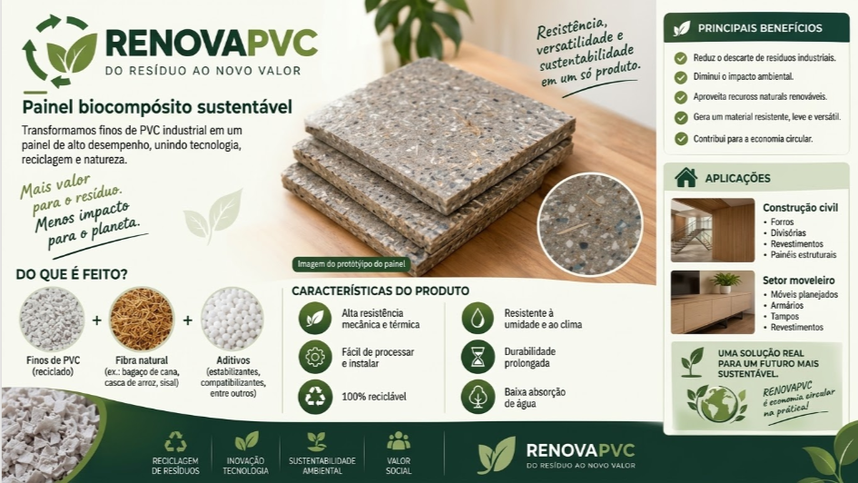
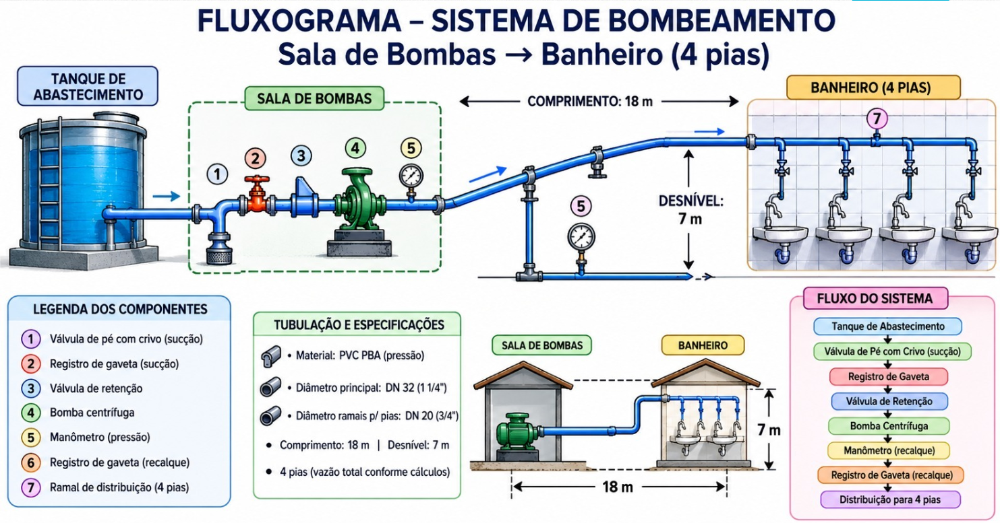

Em andamento
Bacharelado em Engenharia de Energia
Instituto Federal de Educação, Ciência e Tecnologia da Bahia (IFBA) — Campus Lauro de Freitas.
2022 — previsão de conclusão em 2027Graduanda em Engenharia de Energia e estudante do curso Técnico em Petroquímica. Tenho interesse em soluções técnicas, processos industriais e projetos que unem inovação e sustentabilidade.
Minha trajetória acadêmica reúne estudos em energia, processos industriais e desenvolvimento de soluções técnicas. Valorizo o trabalho em equipe, a organização e a aprendizagem contínua.
Instituto Federal de Educação, Ciência e Tecnologia da Bahia (IFBA) — Campus Lauro de Freitas.
2022 — previsão de conclusão em 2027SENAI CIMATEC.
2025 — previsão de conclusão em 2027Atuação no apoio à preparação de estudantes para processos seletivos de ingresso no IFBA. Elaboração de materiais didáticos, atividades de revisão, jogos educativos e acompanhamento da aprendizagem.
Trabalhos acadêmicos desenvolvidos em equipe, com foco em aplicação prática de conhecimentos técnicos.
Desenvolvimento de protótipo com componentes em PVC, envolvendo planejamento, montagem e documentação técnica.
Proposta de painel biocompósito sustentável a partir de finos de PVC, explorando possibilidades de reaproveitamento de materiais.
Estudo acadêmico de transporte de fluidos e distribuição de água, com avaliação de condições de escoamento e perdas de carga.
Espaço reservado para incluir fotografias reais dos protótipos, diagramas e relatórios autorizados.




Disponível para conhecer oportunidades de aprendizagem, colaboração e desenvolvimento profissional.